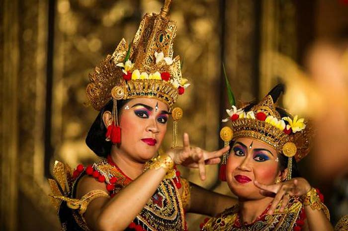

Legong Mahabharata
Liburan di Bali tidak akan lengkap jika belum menonton tari Bali. Ada tiga jenis tarian yang sangat dikenal di kalangan wisatawan, yaitu tari Barong Batubulan, tari Kecak Uluwatu dan tari Legong Ubud. Dihalaman ini kami menuliskan untuk anda, tari Legong Mahabharata.
Tari Legong, salah satu tarian Bali yang variasi geraknya sangat banyak, unik dan sangat atraktif. Walaupun saya pribadi sering menonton tari Legong dari kecil, sampai saat ini saya masih suka menonton tari Legong. Legong berasal dari kata "Leg", yang memiliki arti lentur dan luwes. Sedangkan Gong, berarti alat musik traditional Bali yang mengiringi tari Legong atau dalam bahasa Indonesia disebut dengan nama Gambelan. Jadi dari arti nama, tari Legong berarti tari yang sangat lentur dan luwes dan harus mengikuti suara instrumen dari gambelan dan penari tidak diperbolehkan untuk bergerak sesuka hati.
Jenis gambelan yang digunakan untuk mengiringi tari Legong dinamakan, gambelan Semar Pegulingan. Jenis gambelan Semar Pegulingan, menghasilkan suara stereo dan terdengar nyaman di telinga. Jenis gambelan Semar Pegulingan, juga di gunakan pada tari barong di Bali.
Sejarah Tari Legong Bali
Tari Legong diciptakan dan berkembang pada akhir abad ke 19 dan lebih sering ditarikan di istana kerajaan Bali atau keraton. Di masyarakat Bali, tari Legong lebih familiar dengan nama Legong Keraton, mungkin karena dulunya sering di pentaskan di keraton kerajaan Bali.Menurut cerita dari orang tua di Bali, katanya tari Legong tercipta karena seorang pangeran di kerajaan Sukawati pada saat sakit.
Sang pangeran bermimpi melihat dua gadis belia menarikan tarian ini dan diiringi oleh gambelan yang sangat merdu. Setelah pangeran dari kerajaan Sukawati ini sembuh, maka tarian yang terlihat dari mimpi beliau di ciptakan dalam dunia nyata.Awal mulanya, tari Legong hanya terdapat dua orang gadis yang masih belia dan belum mengalami masa menstruasi. Kedua penari Legong akan membawa kipas, dengan kipas ini, kedua penari Legong akan melakukan gerak yang hampir sama di setiap bagian tarian.
Tari Legong Mahabharata Di Puri Ubud
Jika anda ingin menonton tari Legong Mahabharata, tempat yang harus anda kunjungi adalah puri Ubud atau sering disebut dengan nama puri Saren. Untuk melihat peta lokasi dari puri Saren silakan klik link ini, peta lokasi puri Saren Ubud. Jika anda menginap di Ubud, untuk mencari lokasi dari puri Saren sangatlah mudah, malas jalan kaki anda dapat memanggil taksi. Lalu bagi anda yang tidak menginap di tempat wisata Ubud, tentunya dengan menggunakan taksi biaya transfortasi akan menjadi mahal.
Jika ingin menginap di kawasan wisata Bali selatan seperti tempat wisata Kuta dan objek wisata Seminyak, dan ingin berwisata ke Ubud, cara hemat dan terbaik adalah menggunakan jasa sewa mobil dengan sopir di Kuta. Dengan menggunakan jasa rental mobil dengan sopir di Bali, biaya tidak dihitung dengan menggunakan argo, melainkan menggunakan durasi penggunaan. Tempat wisata di Ubud sangat susah untuk mencari tempat parkir, oleh karena itu disarankan menggunakan sopir, agar tidak perlu memikirkan tempat parkir mobil. Selain menggunakan jasa sewa mobil murah di Bali dengan supir, juga dapat membeli paket tour di Bali, khusus untuk wisata ke Ubud.
Jadwal Tari Legong Mahabharata Di Puri Saren
Tidak setiap hari ada pementasan tari Legong Mahabharata di puri Saren Ubud, pementasan khusus untuk tari Legong Mahabharata, hanya ada pada hari minggu. Tari Legong Mahabharata di puri Saren Ubud dimulai pada jam 19:30 - 21:00, jadi lumayan lama.
Selain tari Legong Mahabharata, di puri Saren Ubud juga dipentaskan tarian lain yang berbeda setiap harinya. Untuk jadwal tari di puri Saren Ubud dapat anda lihat di bawah ini.
Jadwal Tari Di Puri Saren Ubud
| Hari | Jenis Tari | Jam |
| Senin | Tari Legong Keraton | 19.30-21.00 |
| Selasa | Ramayana Ballet | 19.30-21.00 |
| Rabu | Tari Legong & Barong | 19.30-21.00 |
| Kamis | Tari Legong Keraton | 19.30-21.00 |
| Jumat | Tari Barong Ubud dan Keris | 19.30-21.00 |
| Sabtu | Tari Legong Keraton | 19.30-21.00 |
| Minggu | Tari Legong Mahabharata | 19.30-21.00 |
Untuk tiket tari Legong Mahabharata, harganya per 10 Januari 2015 Rp 80.000 untuk satu orang. Pemesanan tiket dapat dilakukan langsung di lokasi pemesantasan.
Tips Menonton Tari Bali Di Puri Saren Ubud
- Ingin mendapatkan tempat duduk di bagian depan, anda harus datang lebih awal, setidaknya 30 menit lebih awal.
- Belilah tiket dari anak-anak yang banyak menjual tiket di depan puri Saren, karena anda dapat menawar harga tiket.
- Bawalah lotion anti nyamuk.
- Bersiaplah untuk duduk agak lama.
- Bawalah brosur tentang tarian ini, agar anda tahu jalan ceritanya saat menonton.